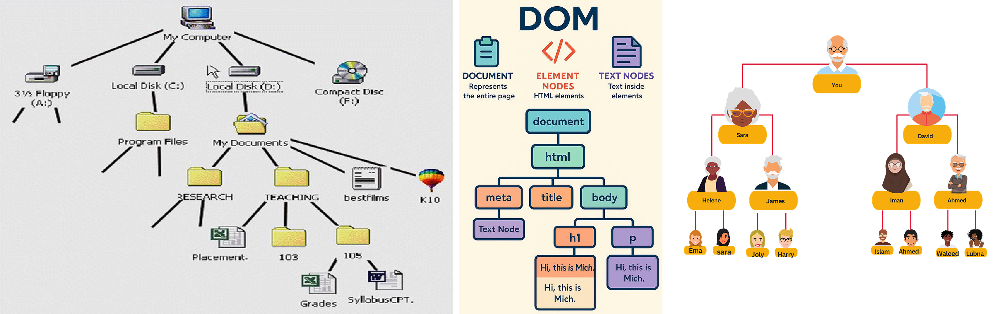
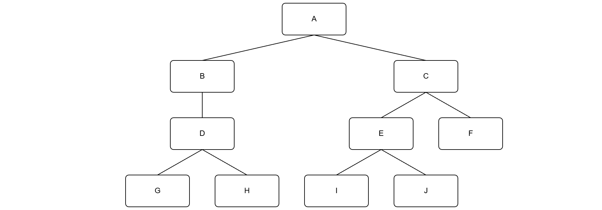
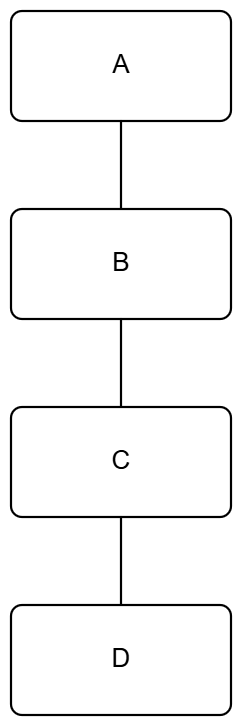
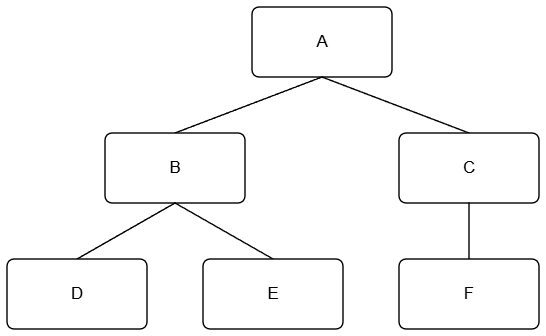
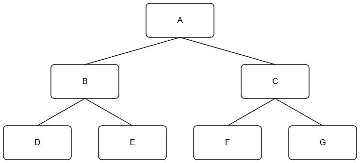
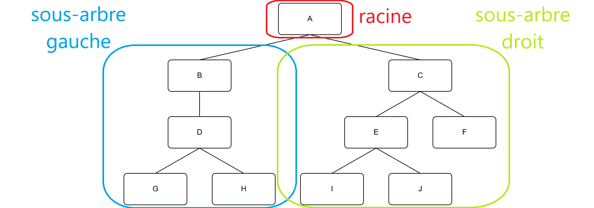
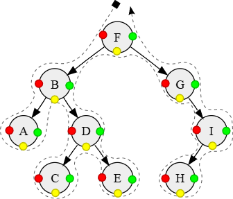
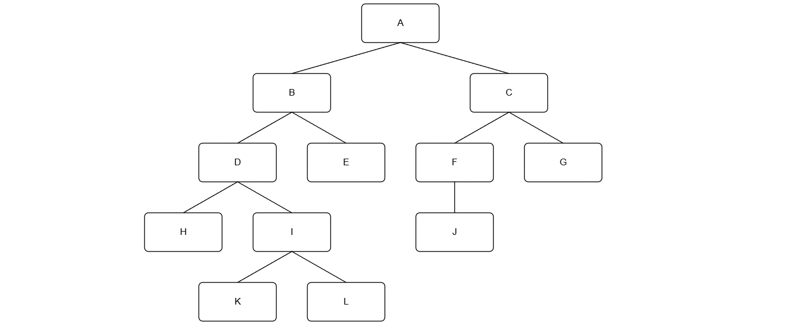

Arbres binaires
Introduction
Définitions
Un arbre est une structure de données hiérarchique composée de nœuds reliés entre eux par des arêtes. Chaque nœud suit deux règles simples :
- il peut donner accès à plusieurs nœuds enfants
- il n'est accessible que par au maximum un seul nœud parent
On retrouve cette structure partout :
- l'arborescence d'un système de fichiers
- le DOM d'une page HTML
- l'arbre généalogique d'une famille

On ne s'interessera ici qu'aux arbres binaires, c'est à dire des arbres dont les noeuds ne peuvent avoir qu'au maximum deux enfants.

Vocabulaire
Racine : Le nœud tout en haut de l'arbre. Il est unique et n'a pas de parent.
Feuille : Un nœud sans enfant. C'est un nœud terminal, au bas de l'arbre.
La hauteur correspond au plus grand nombre de noeuds rencontrés en descendant de la racine jusqu'à une feuille (4 dans notre exemple).
La taille d'un arbre correspond au nombre de noeuds dont il est composé.
Arbres particulier
Un arbre vide ne contient aucun noeud.
Tous les noeuds d'un peigne n'ont pas plus d'un fils. Si tous les noeuds (sauf la racine) sont des fils gauche, on dira que c'est un peigne droit (idem pour le peigne gauche).
Tous les niveaux d'un arbre équilibré sont entièrement remplis, sauf éventuellement le dernier niveau.
Tous les niveaux d'un arbre complet sont entièrement remplis, sauf éventuellement le dernier niveau, et ce dernier niveau est rempli à partir de la gauche.
Tous les noeuds d'un arbre parfait ont exactement deux enfants sauf les racines qui sont toutes au même niveau.
| peigne | complet | parfait |
|---|---|---|
 |
 |
 |
Exercice
1) Dessiner tous les arbres binaires ayant :
- 1 noeud
- 2 noeuds
- 3 noeuds
- 4 noeuds
2) Indiquer pour chacun d'eux si ils appartient à une catégorie particulière d'arbre.
3) En déduire le nombre d'arbres possibles en fonctions du nombres de noeuds.
Représentation Python
Un arbre binaire est défini par lui-même :
Un arbre binaire est :
- soit un arbre vide
- soit composé d'un nœud racine qui pointe vers deux sous-arbres binaires : un sous-arbre gauche et un sous-arbre droit.
C'est ce qu'on appelle une définition récursive : on définit un arbre en termes d'arbres plus petits.

La définition récursive vue précédemment se traduit directement en Python par une classe. Chaque nœud porte trois informations : son fils gauche, sa valeur, et son fils droit.
class Noeud:
"""un noeud d'un arbre binaire"""
def __init__(self, g : 'Noeud | None', v : any, d : 'Noeud | None'):
self.gauche = g
self.valeur = v
self.droite = d
Construire un arbre
On construit un arbre de bas en haut : on commence par les feuilles, puis on remonte vers la racine.
A
/ \
B C
/ \
D E
# Les feuilles en premier (pas d'enfants → None, None)
D = Noeud(None, 'D', None)
E = Noeud(None, 'E', None)
C = Noeud(None, 'C', None)
# Puis les nœuds internes
B = Noeud(D, 'B', E)
# Enfin la racine
A = Noeud(B, 'A', C)
Lire un arbre
Une fois l'arbre construit, on accède aux nœuds via les attributs :
print(A.valeur) # 'A'
print(A.gauche.valeur) # 'B'
print(A.droite.valeur) # 'C'
print(A.gauche.gauche.valeur) # 'D'
print(A.gauche.droite.valeur) # 'E'
print(A.droite.gauche) # None ← C n'a pas d'enfant gauche
Exercice
1) Programmer les fonctions suivantes :
def est_vide(a):
" Renvoie True si l'arbre a est vide, False sinon "
# à remplir
def est_feuille(a):
" Renvoie True si l'arbre a une feuille, False sinon "
# à remplir
def taille(a : 'Noeud') -> int :
" Renvoie le nombre de noeuds l'arbre a "
# à remplir
def hauteur(a : 'Noeud') -> int :
" Renvoie la hauteur de l'arbre a "
# à remplir
def racine(a):
" Renvoie la racine de l'arbre a "
# à remplir
def feuilles(a):
" Renvoie la liste des feuilles de l'arbre a "
# à remplir
def est_peigne(a):
" Renvoie True si l'arbre a est un peigne, False sinon "
# à remplir
def est_parfait(a):
" Renvoie True si l'arbre a est parfait, False sinon "
# à remplir
Parcours
Un parcours consiste à visiter tous les nœuds d'un arbre exactement une fois, dans un ordre défini. Il existe deux grandes familles de parcours.
Parcours en profondeur
On descend le plus loin possible dans l'arbre avant de revenir en arrière. Il existe 3 variantes, selon le moment où l'on traite la racine par rapport à ses sous-arbres.
L'arbre utilisé pour tous les exemples :
A
/ \
B C
/ \ \
D E F
Parcours préfixe
Racine → Gauche → Droite
On traite le nœud avant de descendre dans ses enfants.
Résultat sur notre arbre : A, B, D, E, C, F
Parcours infixe
Gauche → Racine → Droite
On traite le nœud entre ses deux sous-arbres.
Résultat sur notre arbre : D, B, E, A, C, F
Parcours suffixe
Gauche → Droite → Racine
On traite le nœud après ses deux sous-arbres.
Résultat sur notre arbre : D, E, B, F, C, A
Récapitulatif des 3 parcours en profondeur

Parcours préfixe : F B A D C E G I H
Parcours infixe : A B C D E F G H I
Parcours postfixe : A C E D B H I G F
Parcours en largeur
Au lieu de descendre en profondeur, on visite les nœuds niveau par niveau, de gauche à droite.
A
/ \
B C
/ \ \
D E F
Résultat : A, B, C, D, E, F
Exercice
1) Donner l'odre des noeuds de cet arbre en respectant les 4 parcours vus précédemment.

2) Programmer ensuite des fonctions Python qui affichent les noeuds d'un arbre pour chacun de ces parcours.